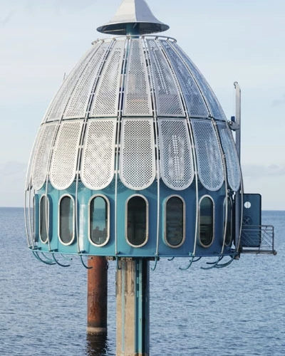

公司简介
about

三亚，是个被上帝宠坏了的地方。上帝把最宜人的气候、最清新的空气、最和煦的阳 光、最湛蓝的海水、最柔和的沙滩、最风情万种的少数民族、最美味的海鲜……都赐予了这座海南岛最南端的海滨旅游城市。到了三亚，没有人不为这里的大海所动 容，在这里，你可以尽情舒展身心，与神奇的海洋世界零距离接触，或是静静地躺在沙滩上让阳光亲吻肌肤，听海的声音。三亚，是个被上帝宠坏了的地方。上帝把 最宜人的气候、最清新的空气、最和煦的阳光、最湛蓝的海水、最柔和的沙滩、最风情万种的少数民族、最美味的海鲜……都赐予了这座海南岛最南端的海滨旅游城 市。到了三亚，没有人不为这里的大海所动容，在这里，你可以尽情舒展身心，与神奇的海洋世界零距离接触，或是静静地躺在沙滩上让阳光亲吻肌肤，听海的声 音。三亚，是个被上帝宠坏了的地方。上帝把最宜人的气候、最清新的空气、最和煦的阳光、最湛蓝的海水、最柔和的沙滩、最风情万种的少数民族、最美味的海 鲜……都赐予了这座海南岛最南端的海滨旅游城市。到了三亚，没有人不为这里的大海所动容，在这里，你可以尽情舒展身心，与神奇的海洋世界零距离接触，或是 静静地躺在沙滩上让阳光亲吻肌肤，听海的声音。